Практичні курси · журнал «ДентАрт» 2022 №2
Реставрація зубів з під’ясенним дефектом
Restoration of teeth with a subgingival defect · Поетапний клінічний протокол функціональної реабілітації
Тільки надійна ізоляція робочого зуба повною системою рабердаму може забезпечити якісну адгезивну підготовку зубних тканин і дасть можливість виконати пряму реставрацію, що прослужить не менше 10 років і не буде поступатися в терміні служби непрямій реставрації.
Проте наявність під’ясенного дефекту унеможливлює надійну ізоляцію рабердамом через відсутність так званого «ферул-ефекту»… Щоб досягнути можливості надійної ізоляції, в реставрації таких зубів застосовують різні підходи: ортодонтичне витягування зуба, хірургічне подовження коронки з наступною прямою чи непрямою реставрацією або навіть видалення зуба з установкою імпланта. Вибір клінічної стратегії реставрації залежить від параметрів під’ясенного дефекту.
Класифікація під’ясенних дефектів зубів
Нова класифікація М. Венезіані (2010) базується на двох клінічних параметрах:
- технічно-операційний: чи можливо провести коректну ізоляцію зуба за допомогою рабердаму;
- біологічний: яка дистанція між краєм дефекту і періодонтальним прикріпленням або кістковим краєм, визначена за допомогою діагностичного зонда і радіографії.
Застосовуючи ці параметри, за цією класифікацією визначаються три рівні під’ясенного дефекту:
- Рівень 1: пришийковий край відпрепарованої порожнини добре видно із завісою рабердаму, заправленою в ясенну борозну.
- Рівень 2: рабердам не дає коректної ізоляції, але біологічна ширина між краєм дефекту і періодонтальним прикріпленням становить понад 2 мм або кістковим краєм – понад 3 мм.
- Рівень 3: під’ясенний край порожнини, утвореної через карієс або перелом коронки, міститься з порушенням біологічної ширини – менше 2 мм до періодонтального прикріплення або менше 3 мм до кісткового краю.
Слід зауважити, що ця класифікація стосується потреб непрямої реставрації, і саме тому згідно з нею пропонуються три різні відповідні підходи до вирішення клінічної ситуації кожного рівня:
- Рівень 1: релокація краю дефекту за допомогою текучого композиту з максимальною товщиною від 1 до 1,5 мм, далі мають бути відбудова кукси, препарування, відбиток і адгезивна фіксація конструкції через 7 днів.
- Рівень 2: хірургічне відкриття краю дефекту, застосування текучого композиту товщиною 0,5 мм у пришийковій зоні дефекту, відбудова кукси, препарування, відбиток і адгезивна фіксація конструкції через 7 днів після зняття швів.
- Рівень 3: хірургічне подовження клінічної коронки з негайним раннім або відстроченим відбитком залежно від клінічної ситуації. Далі за алгоритмом клінічних процедур для рівня 2.
Загалом різні підходи до реставрації зубів з під’ясенними дефектами трьох рівнів можна застосувати і до потреб прямої реставрації, хоча все може бути простіше і з більшим у кілька разів допуском, і ось чому…
Відновлення зубів з під’ясенним дефектом
У випадках, коли можливості надійної ізоляції сумнівні, у практиці для реставрації таких зубів застосовують різні підходи для досягнення так званого «ферул-ефекту»: ортодонтичне витягування зуба, хірургічне подовження коронки або глибоке підняття краю дефекту до рівня ясен.
Ортодонтичну екструзію краще обирати, якщо лікування є високопередбачуваним, якщо вже є ортодонтичний апарат і якщо потрібно зберегти зуб, коли життєздатність або лікування зубів несумісне з атравматичним видаленням. Хірургічну екструзію доцільно виконувати, якщо є необхідність вирішення ендодонтичної проблеми, яку неможливо вирішити за допомогою звичайних ортоградних ендодонтичних методів, або як альтернативу видаленню зубів, що не підлягають альтернативному відновленню. Як хірургічна, так і ортодонтична екструзія можуть бути використані цілком успішно в лікуванні дуже скомпрометованих зубів, і майбутня перспектива – це комбінована техніка, здатна поєднати переваги кожної з цих технік.
Ортодонтичне витягування здається цілком передбачуваним і здійсненним у попередньому лікуванні травмованих зубів з під’ясенним переломом, як для їх збереження, так і для сприятливої естетики, і є доступними три ключові протоколи для травмованих зубів.
Щоб уникнути патологічних змін і точніше спрогнозувати лікування, слід зберегти незмінною біологічну ширину ясен навколо зубів, що відновлюються. Якщо від краю реставрації до альвеолярного краю кістки менше 2 мм, то в плані лікування слід враховувати хірургічне подовження клінічної коронки. В ідеалі межі реставрації повинні міститися над яснами або на тому ж рівні, що і ясенний край.
Потрібні подальші дослідження ортодонтичної екструзії перед хірургічною екструзією. За обмежених наявних доказів операція з хірургічного подовження коронки є цілком успішною для тривалої життєздатності зубів. Однак глибоке підняття краю дефекту дає кращий результат виживання.
Причини утворення під’ясенного дефекту
Під’ясенний дефект може виникнути внаслідок карієсу зубів, одномоментної травми і надмірного циклічного навантаження на зуб. Головною причиною утворення під’ясенних дефектів у вигляді поздовжнього розколу зуба, відколу стінки коронки є циклічні навантаження зубів під час жувальної функції та функції подолання стресу через стискання зубів.
Під час стискання щелеп природні інтактні зуби мають фізіологічні деформації, які проявляються у скороченні коронки, її розширенні і розходженні/дилатації горбиків (мал. 1), породжуючи силу на розрив по центру зуба. З деформованими зубами ми маємо справу, перевіряючи оклюзію.
Після зняття навантаження еластичні деформації зникають і зуб повертається у висхідну форму (мал. 2), сила на розрив по центру зуба зникає… У такому розслабленому стані, власне, ми завжди оглядаємо зуби, попросивши пацієнта відкрити рота.
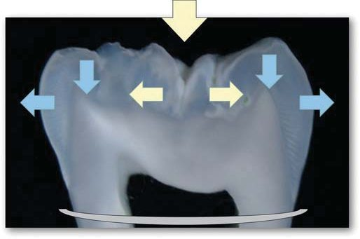
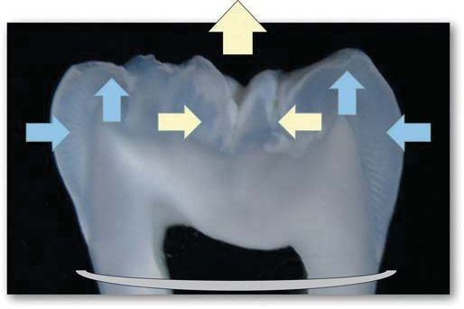
Деформаціям зуба протистоять, за нашим уявленням, три силові пояси (мал. 3):
- перший – кільце оклюзійної поверхні, утворене горбиками і крайовими валиками;
- другий – екватор зуба, посилений арковою конструкцією даху порожнини зуба;
- третій – альвеолярний край кістки.
Звичайно, і періодонтальна зв’язка, і сама альвеолярна кістка теж беруть участь у природних деформаціях, кожна у відповідності зі своїми механічними властивостями. Природні деформації зубів, періодонтальної зв’язки і кістки вкрай необхідні для функціонування зубощелепної системи, тому що через ці деформації відбувається абсорбція оклюзійного навантаження, спрямоване і пошарове поглинання стресу.
Пропріоцептивна чутливість зуба у природний спосіб надає людині можливість контролювати силу стискання щелеп – при надмірному стисканні виникають надмірні деформації і біль, що виникає, спонукає людину зупинити стискання щелеп, і таким чином підтримується функціональний баланс зубощелепної системи. Щоправда, це стосується лише інтактних зубів, у яких присутні природні «гальма»… На протилежність цьому, люди з девітальними зубами не контролюють силу стискання щелеп, а конструкції непрямих реставрацій орієнтовані на блокування природних деформацій!
Якщо природна структура зуба як складної біоінженерної структури порушена патологією зубних тканин, великими реставраціями (особливо класу II/MOD) або ж зуб позбавлений пульпи, то це порушує перший і другий силові пояси, і всі деформації внаслідок циклічних оклюзійних навантажень концентруються перед третім силовим поясом – альвеолярним краєм кістки (мал. 4).
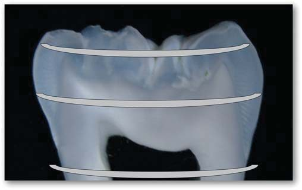
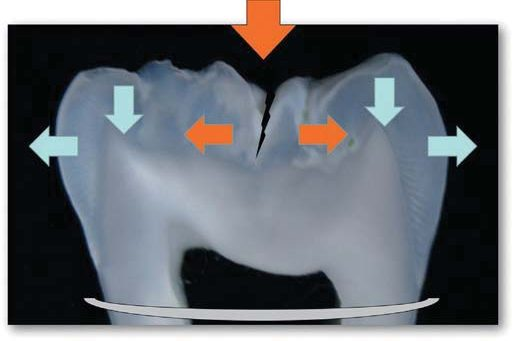
Циклічна і надмірна концентрація навантажень у пришийковій зоні зуба з часом призводить до механічної втоми відповідних зубних тканин, формуються мікротріщини, які поширюються і зливаються, утворюючи тріщину, і нарешті в якийсь момент від незначного навантаження виникає перелом коронки, відкол стінки зуба.
Постійний психологічний стрес, бруксизм, пласкі поверхні реставрацій інтенсифікують циклічні навантаження і сприяють наближенню до трагічного фіналу!
Отже, якщо циклічні навантаження і механічна втома зубних тканин концентруються перед третім силовим поясом, то тріщина, що утворилася через це перевантаження, має проходити вище альвеолярного краю кістки. Далі, якщо тріщина проходить вище альвеолярного краю кістки, то край під’ясенного дефекту, розміщеного вище кістки, можна ізолювати. Нарешті, якщо край під’ясенного дефекту можна ізолювати, значить, цей зуб можна надійно реставрувати, принаймні у прямій техніці!
Ізоляція зуба з під’ясенним дефектом
Передусім треба під анестезією за допомогою гострого діагностичного зонда переконатися, що пришийковий край дефекту справді міститься вище від альвеолярного краю кістки. Для цього рекомендуємо робити вертикальне зондування, рухаючись від середини зуба до краю дефекту, прикритого ясенним краєм. У якийсь момент зонд провалюється і впирається в кістку… Зазвичай цей «провал» зонда становить близько 1 мм, і це є висота краю під’ясенного дефекту зуба над альвеолярним краєм кістки.
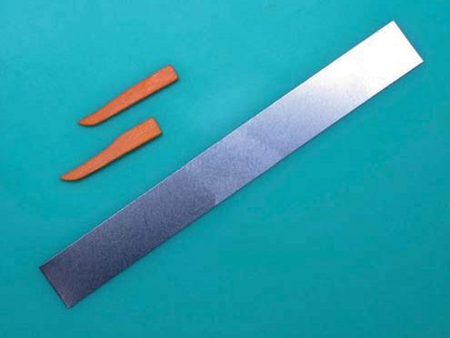
Далі треба приготувати жорстку металеву матрицю стандартної довжини і 2 дерев’яні клини. Один край матриці за потреби можна вирізати у лінійній формі дефекту. Матрицю слід заздалегідь вигнути по формі частини кореня з під’ясенним дефектом, а її жорсткість дозволить притиснути матрицю до поверхні кореня у міжзубних проміжках клинами, що можуть бути встановлені тільки вище ясенного краю.
Після накладення повної системи рабердам можна братися за ізоляцію причинного зуба… Вигнуту матрицю треба розташувати на зубі з під’ясенним дефектом (завіса навколо зуба охоплює матрицю), і притискаючи матрицю до зуба, треба просувати її до краю дефекту, відтісняючи ясенний край, щоб повторити «провал» діагностичного зонда.
Упевнившись, що край кореня охоплений матрицею і візуально добре контролюється, слід зафіксувати позицію матриці двома дерев’яними клинами відповідного розміру. Після фіксації клинами кінці матриці треба затягнути так, щоб матриця щільно охопила пришийкову частину зуба.
Матриця добре захищає ясенний край, і тому під таким захистом можна допрепарувати поверхню дентину для кращої адгезивної підготовки. Слід упевнитися протягом хвилини, що підтікання відсутнє, утримуючи матрицю в періодонтальній щілині з певним зусиллям.
Через хвилину, якщо все добре, продовжуючи утримувати матрицю із зусиллям до завершення відбудови кореня, робимо адгезивну підготовку, вносимо по краю прилягання матриці невелику кількість текучого композиту і мікрогібридним композитом відновлюємо край кореня до рівня ясенного краю.
Після світлової експозиції на полімеризацію треба видалити дерев’яні клини, зняти матрицю, зондом і рентгенографічно переконатися у відсутності навислих країв композиту. Далі можна накласти на корінь звичний відповідний кламп для стабілізації завіси навколо зуба і продовжити стоматологічні процедури за стандартним алгоритмом.
Клінічний приклад 1. Відновлення латерального різця на корені
Маючи рекомендацію на видалення зуба 12 з наступною імплантацією через пришийковий перелом кореня, пацієнтка звернулася з проханням збереження зуба, який ми 8 років тому реставрували на корені зі штифтом ІзіПост. Коронка зуба була прикріплена до сусідніх зубів за допомогою металевого ретейнера.
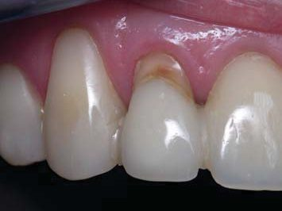
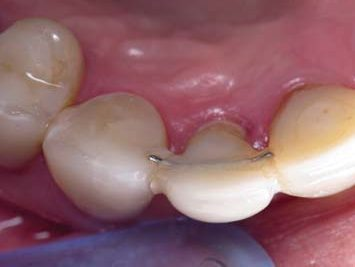
Після видалення ретейнера виявлено кілька ліній перелому по шийці зуба. Фрагменти кореня видалені, глибина під’ясенного дефекту з вестибулярного боку становила майже 4 мм. Оральний і контактні краї кореня зберегли свою цілісність, і причиною такого перелому міг стати достатньо жорсткий штифт.
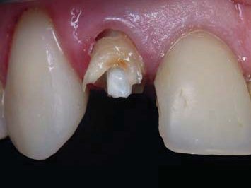
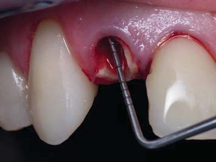
Під анестезією була встановлена жорстка металева матриця, край якої вирізаний по формі під’ясенного дефекту, і зафіксована двома дерев’яними клинами на контактних краях кореня. Кінці матриці затягнуті так, щоб вона щільно охопила корінь. Відсутність підтікання перевірена протягом хвилини.
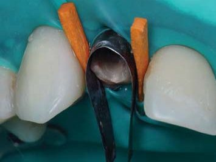
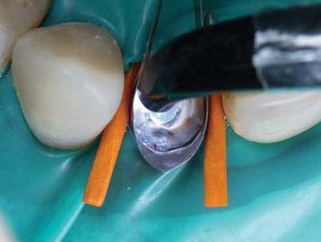
Після адгезивної підготовки вестибулярний край відновлений текучим і мікрогібридним композитами. Рентген-контроль крайового прилягання.
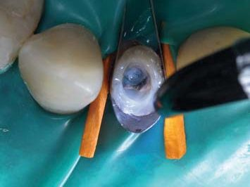
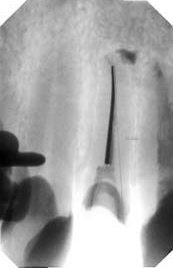
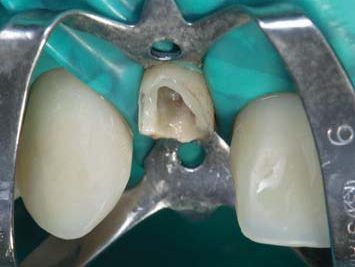
Після переліковування кореневого каналу виконана композитна коренева вкладка зі скловолоконним армуванням оральної стінки кореня.
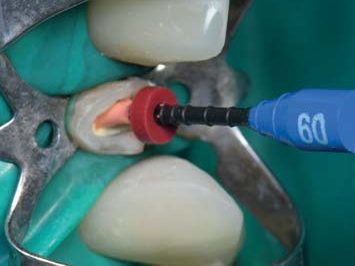
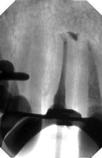
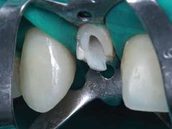
На кореневій вкладці відновлено світлий центр реставрації, який імітує топографію предентину з висхідними колонами мамелонів, і відновлено оральну стінку коронки відтінками різної опаковості: основний дентин, основна емаль і поверхнева емаль. Важливо перевірити позиціонування коронки в зубному ряду.
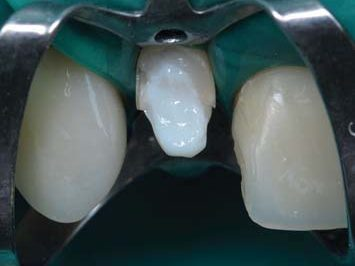
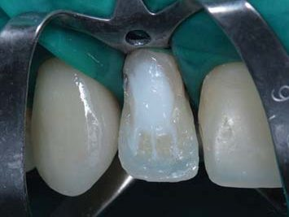
Вестибулярно опаковим відтінком мікрогібридного композиту відновлені контури дентину з дентинною частиною трьох мамелонів. Далі емалевим відтінком наногібридного композиту відновлені контури основної емалі, в яких емалева частина мамелонів закінчилася приблизно за 1 мм до ріжучого краю коронки.
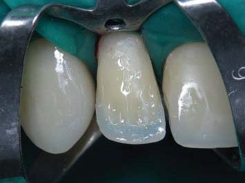
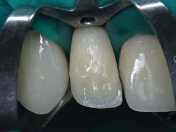
Прозорим відтінком наногібридного композиту відновлено вестибулярну поверхню з майже завершеними фронтальними контурами коронки. Після зняття клампа рабердаму прозорим відтінком мікрогібридного композиту відновлено контактні поверхні з перевіркою крайового прилягання реставрації до поверхні кореня.
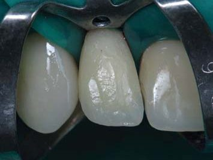
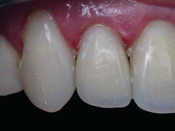
Була відновлена і латеральна контактна поверхня центрального різця з контролем щільності міжзубних контактів. На штучній поверхні коронки відновленого зуба 12 можна нанести бажаний мікрорельєф без будь-яких обмежень. Перехід коронки на корінь уточнено фінішним бором і силіконовим зворотним конусом.
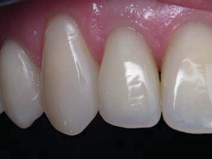
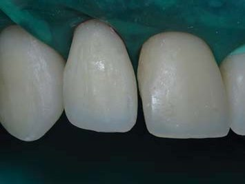
Вигляд зуба 12 через місяць демонструє можливість самостійного і незалежного функціонування без будь-якої підтримки через шинування. Ясенний край навколо цього зуба має звичайний анатомічний контур, і відсутні ознаки запалення. Міжзубні сосочки відновлюють свою висоту під збережений для них простір.
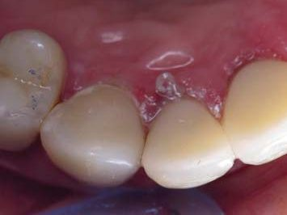
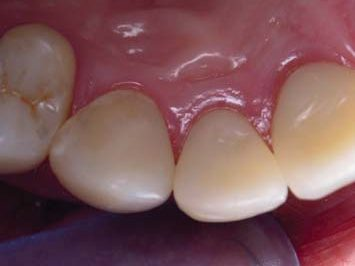
Клінічний приклад 2. Відновлення премоляра з відломом стінки
У вітальному зубі 15 під час випадкового накушування на кісточку стався розкол зуба з під’ясенним відломом оральної стінки. За консультацією хірурга зуб підлягав видаленню з наступною імплантацією. Після невдалої спроби накласти кламп на піднебінну частину кореня стоматолог погодилася з хірургом…
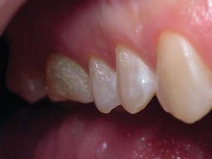
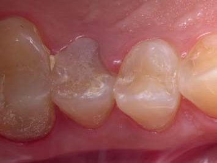
Але пацієнтка не була згодна! Отже, під анестезією за допомогою діагностичного зонда було виявлено, що край кореня був вищим за край кістки. З ізоляцією рабердамом установлено жорстку металеву матрицю, вигнуту по формі оральної частини кореня, і відновлено край зуба до рівня трохи вище ясенного краю.
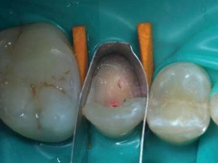
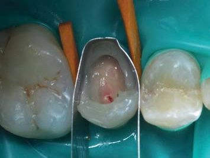
Проведена екстирпація пульпи, канали сформовані і верифіковані на робочу довжину в розмірі 35 і 30 з рентгенологічним підтвердженням.
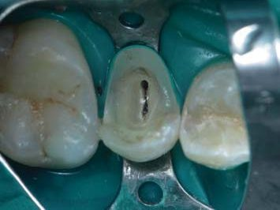
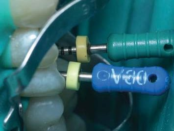
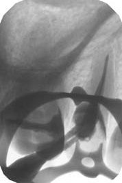
Після медикаментозної підготовки і внесення силера AH Plus кореневі канали були обтуровані Термафілом 35 і 30 із рентгенологічним контролем.
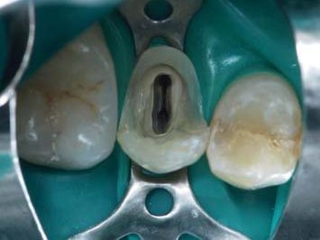
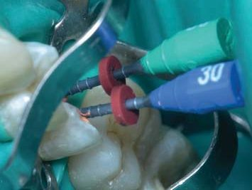
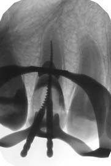
Після очищення порожнини зуба від гутаперчі була зроблена адгезивна підготовка зубних тканин універсальним дентинним адгезивом, стержні Термафілу ізольовані текучим композитом, порожнина зуба виповнена білим відтінком композиту, армованого по оральній стінці скловолоконними пінами ДентаПрег.
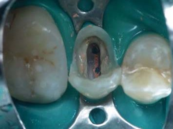
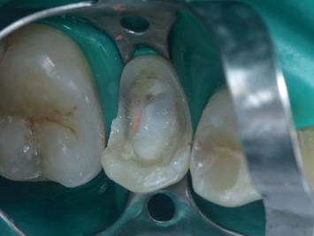
Білим відтінком наногібридного композиту відновлено центри оральної і вестибулярної стінок, і між ними вкладено плетене скловолокно ДентаПрег шириною 2 мм. Опаковим, емалевим і прозорим відтінками мікро- і наногібридного композиту відновлено оральну стінку коронки у формі першого премоляра.
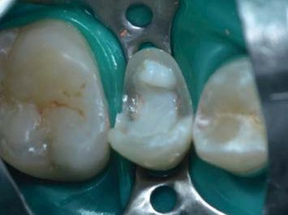
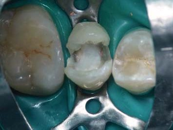
За допомогою системи Палодент відновлено дистальну, а потім мезіальну контактні поверхні в стратегії MOD-O. Для відбудови контактних поверхонь використано послідовно текучий, мікро- і наногібридний композити з одночасною адаптацією і світловою полімеризацією трьох складових відтінків протягом 20 с.
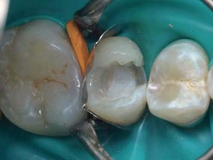
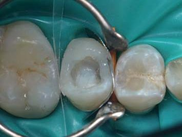
Після переводу зуба 15 у дефект Класу I зроблене відновлення опаковим відтінком мікрогібридного композиту ввігнутої форми дентину, а потім емалевим і прозорим відтінками наногібридного композиту відновлена оклюзійна поверхня. Тонування фісур допомагає краще оцінити досягнуту анатомічну форму зуба.
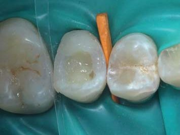
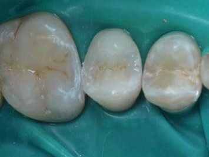
Фінішна обробка кутів і переходів контактних поверхонь, рентгенівський контроль заповнення коронки і крайового прилягання реставрації.
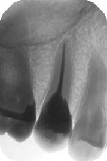
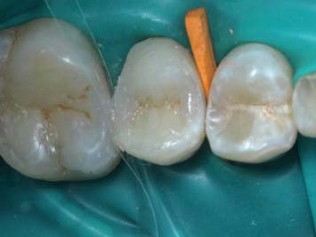
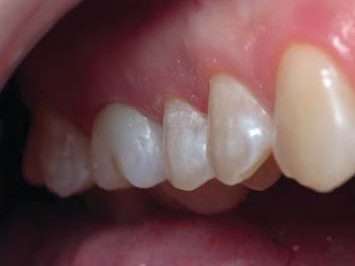
Контрольна оцінка стану реставрованого зуба і ясенного краю через 2 дні задовільна, враховуючи травматичність процедур усунення під’ясенного дефекту. Прогноз оптимістичний, хоча через травматичний відкол оральної стінки довелося девіталізувати зуб і позбавити його пропріоцептивної чутливості.
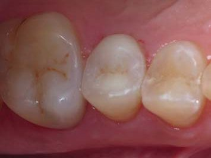
Клінічний приклад 3. Відновлення моляра з відломом стінки
Багатостраждальна історія цього зуба описана двічі, коли була реновація реставрації по завершенню 10-річного строку служби і коли зуб 46 був склеєний після розколу, що стався через 3 роки. Минуло ще 3 роки, і оральна стінка цього зуба таки відкололася з утворенням під’ясенного дефекту.
На заміну Плану А, який протягом 3-річного гарантійного періоду виявився недостатнім, завжди має бути План Б! Упевнившись за допомогою діагностичного зонда, що відлом оральної стінки стався вище рівня кісткового краю, ми встановили жорстку металеву матрицю і зафіксували двома дерев’яними клинами.
Під час відновлення краю зуба текучим і мікрогібридним композитами матриця утримувалася у періодонтальній щілині під постійним тиском.
Далі для стабілізації країв латексної завіси був встановлений звичайний кламп, і відтінками композиту основного дентину, основної емалі і поверхневої емалі відновлена оральна стінка зуба з позиціонуванням горбиків у ритміці всього секстанту. Лавсанові смужки запобігають склеюванню із сусідніми зубами.
Після переведення коронки в дефект класу I опаковим відтінком мікрогібридного композиту в техніці Квадра-Сіл був відновлений дентин. Далі емалевим відтінком наногібридного композиту у відповідності з топографією оклюзійної поверхні відбудовано основу всіх п’яти горбиків з напрямними та площинами.
Прозорим відтінком наногібридного композиту завершено моделювання оклюзійної поверхні зуба 46, і тонування фісур пігментованим текучим композитом дозволяє оцінити топографію горбиків, саме вони мають «працювати» в оклюзії. Далі фінішна обробка кутів коронки фінішними борами і абразивними дисками.
Вигляд реставрованого зуба демонструє звичну анатомічну форму оральних горбиків. Під час ізоляції природна емаль через дегідратацію стала світлішою, і межі природної і штучної емалі стають видимими. Колір поверхні емалі вирівнюється вже під час фінішної обробки, і межі знову стають невидимими.
Післяопераційний вигляд реставрованого зуба 46. Завдяки застосуванню жорсткої металевої матриці і клинів була досягнута ізоляція зуба для адгезивного відновлення за умови збереження ясенного об’єму – рівень ясенного краю відповідає анатомічному навіть після завершення складного відновлення зуба.
Матеріали
У всіх трьох наведених клінічних прикладах реставрації зубів з під’ясенним дефектом були використані адгезивні системи і композити реставраційної програми Дентсплай Сірона:
- адгезивні системи XP-bond (латеральний різець) та Prime & Bond Universal у техніці тотального протравлювання;
- універсальний відтінок текучого композиту SDR для ізоляції обтурованих каналів, еластичної підкладки на дентині, заповнення щілин у техніці Квадра-Сіл і частково для побудови контактних поверхонь бічних зубів;
- відтінок A3,5O мікрогібридного композиту Spectrum TPH/TPH3 для відновлення основного дентину в топографії емалево-дентинного з’єднання;
- відтінок B1 incisal мікрогібридного композиту Spectrum TPH/TPH3 для побудови контактних поверхонь передніх зубів і частково для побудови контактних поверхонь бічних зубів;
- відтінок WO наногібридного композиту Esthet-X HD для заповнення порожнини зуба та імітації предентину з висхідними колонами мамелонів;
- відтінок B2 наногібридного композиту Esthet-X HD для відновлення основної емалі;
- відтінок YE наногібридного композиту Esthet-X HD для відновлення поверхневої емалі і частково для побудови контактних поверхонь бічних зубів.
Для досягнення кольору реставрації використовувалася біоміметична концепція: комбінація двох відтінків дентину і двох відтінків емалі з орієнтацією на емалево-дентинне з’єднання.
Для армування реставрацій використані плетене скловолокно Dentapreg SFM і скловолоконні піни Dentapreg PINPost (премоляр), виробництво ADM (Чехія). Для тонування фісур бічних зубів використано відтінок Brown текучого композиту Enamel Plus HFO, виробництво Micerium (Італія).
Обговорення
За наявності під’ясенного дефекту для досягнення так званого «ферул-ефекту» можливості ізоляції зуба для прямої і непрямої реставрації сумнівні, тому для реставрації таких зубів застосовують різні підходи: роблять ортодонтичне витягування зуба, хірургічне подовження коронки або навіть видалення зуба з установкою імпланта.
Ортодонтичне витягування потребує значного часу і спеціальних конструкцій і несе ризики через порушення періодонта і відсутність ретенційного періоду. Крім того, в результаті буде зменшене співвідношення довжини кореня і висоти клінічної коронки не на користь стійкій позиції реставрованого зуба.
Хірургічне подовження клінічної коронки не впливає на стійкість зуба, оскільки корінь залишається на місці, але призводить до втрати об’єму навколишніх м’яких тканин заради створення ізоляції для адгезивної реставрації зуба з під’ясенним дефектом… Спробуйте після реставрації відновити втрачені м’які тканини!
Проте простим і добре відомим прийомом ізоляції зубів з під’ясенним дефектом за допомогою жорсткої металевої матриці і двох дерев’яних клинів можна досить легко підняти композитом пришийковий рівень дефекту до рівня ясенного краю і далі відновити зуб у звичному алгоритмі як у прямій, так і в непрямій реставрації.
На сьогодні у літературі немає рандомізованих контрольованих клінічних випробувань або проспективних чи ретроспективних клінічних досліджень техніки консервативного підняття краю під’ясенного дефекту. На підставі розглянутої літератури можна зробити висновок, що нині ми ще не маємо достовірних наукових доказів, які можуть підтримувати або заперечувати використання цього методу в реставрації непрямими адгезивними реставраціями зубів з глибокими під’ясенними дефектами.
Але досвід свідчить, що підняття краю під’ясенного дефекту є багатообіцяючою технікою, проте її можна застосовувати для прямих і непрямих реставрацій з обережністю, дотримуючись трьох критеріїв: можливість ізоляції відновлюваного зуба, ідеальна герметизація пришийкового краю за допомогою матриці та відсутність інвазії в сполучний відділ біологічної ширини.
Висновки
Реставрація зубів з під’ясенними дефектами – це консервативна альтернатива ортодонтичній екструзії і хірургічному подовженню коронки з метою досягнення кругової ізоляції зуба. Жорстка металева матриця і два дерев’яні клини у комбінації із встановленою системою ізоляції рабердам можуть допомогти стоматологові негайно отримати таку ізоляцію, яка дозволить підняти край дефекту до рівня ясенного краю з наступною прямою реставрацією цього зуба або створенням необхідних умов для непрямої реставрації.
За нашим досвідом, цей спосіб можна застосовувати як альтернативу з рекомендаціями класифікації М. Венезіані (2010) з мінімальною сходинкою 1 мм між краєм дефекту і альвеолярним краєм кістки: не варто очікувати приростання ясенного прикріплення до поверхні композиту, але й запалення ясенного краю не буде, якщо сформована металевою матрицею поверхня композиту в зоні біологічної ширини залишатиметься гладенькою.
Література
- Радлинский С. Реставрационные конструкции переднего и боковых зубов // ДентАрт. – 1996. – №4. – С. 22-29.
- Радлинский С. Реставрация боковых зубов: стратегия и принципы // ДентАрт. – 1999. – №4. – С. 19-29.
- Радлинский С. Биомеханика зубов и реставраций // ДентАрт. – 2006. – №2. – С. 42-48.
- Радлинский С. Реставрация контактных поверхностей в боковых зубах // ДентАрт. – 2015. – №2. – С. 25-34.
- Радлинский С. Системная реновация реставрированных зубов. Нижние зубы // ДентАрт. – 2019. – №3. – С. 25-34.
- Радлинский С. Восстановление зуба с продольным расколом // ДентАрт. – 2020. – №3. – С. 13-24.
- Veneziani M. Adhesive restorations in the posterior area with subgingival cervical margins: new classification and differentiated treatment approach // EJED. – 2010. – V.5, N.1. – P. 50-76.
- Juloski J., Köken S., Ferrari M. Cervical margin relocation in indirect adhesive restorations: A literature review // Journal of prosthodontic research. – 2018. – N.68. – P. 273-280.
- Planciunas L., Puriene A., Mackeviciene G. Surgical lengthening of the clinical tooth crown // Stomatologija, Baltic Dental and Maxillofacial Journal. – 2006. – N.8. – P.88-95.
- Samartzi T. K., Papalexopoulos D., Ntovas P., Rahiotis C., Blatz M. B. Deep Margin Elevation: A Literature Review // Dentistry Journal. – 2022, 10, 48. – 17 p.
- Cordaro M., Staderini E., Torsello F., Grande N. M., Turchi M., Cordaro M. Orthodontic Extrusion vs. Surgical Extrusion to Rehabilitate Severely Damaged Teeth: A Literature Review // Int. J. Environ. Res. Public Health. – 2021, 18, 9530. – 14 p.
- Reichardt E., Krug R., Bornstein M. M., Tomasch J., Verna C., Krastl G. Orthodontic Forced Eruption of Permanent Anterior Teeth with Subgingival Fractures: A Systematic Review // Int. J. Environ. Res. Public Health. – 2021, 18, 12580. – 15 p.
- Mugri M. H., Sayed M. E., Nedumgottil B. M., Bhandi S., Raj A. T., Testarelli L., Khurshid Z., Jain S., Patil S. Treatment Prognosis of Restored Teeth with Crown Lengthening vs. Deep Margin Elevation: A Systematic Review // Materials. – 2021, 14, 6733. – 10 p.
Практичні курси прямої реставрації зубів у Навчальному центрі «Аполлонія»
Курс реставрації